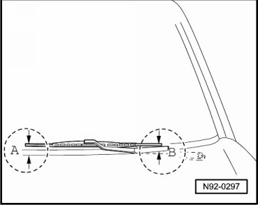
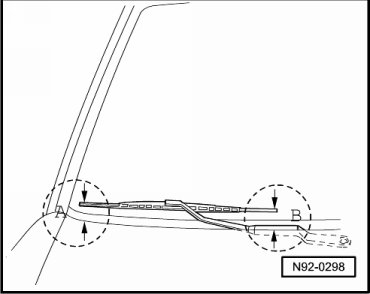

Windshield Wiper Blades, Adjusting Park Position
Windshield Wiper Blades, Adjusting Park Position
Special tools, testers and auxiliary items required
• Torque Wrench (V.A.G 1331/)
• On right-hand drive vehicles, the location of the wiper blades is a mirror image.
- Switch the ignition on and then switch the wipe function on and off to bring the wiper motor into the basic position.
Driver side:

The distance - A - between wiper blade and lower edge of windshield must be 44 mm.
The distance - B - between wiper blade and lower edge of windshield must be 12 mm.
- If necessary, adjust the park position by repositioning the wiper arm.
- Tighten the driver wiper arm nut to the specification given in the assembly overview --> [ Windshield Wiper System Assembly Overview ] Windshield Wiper System Assembly Overview.
Passenger side:

The distance - A - between wiper blade and lower edge of windshield must be 0.47 in.
The distance - B - between wiper blade and lower edge of windshield must be 0.35 in.
- If necessary, adjust the park position by repositioning the wiper arm.
- Tighten the passenger wiper arm nut to the specification given in the assembly overview --> [ Windshield Wiper System Assembly Overview ] Windshield Wiper System Assembly Overview.